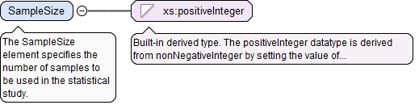
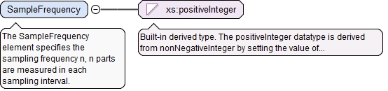

The required n attribute is the number of Id elements in this array.
Source
<xs:element name="MeasurementDeviceIds" type="ArrayReferenceType" minOccurs="0"><xs:annotation><xs:documentation>The optional MeasurementDeviceIds element is a list of the ids of one or more measurement devices in the measurement system to be studied.</xs:documentation></xs:annotation></xs:element>
The SampleSize element specifies the number of samplesto be used in the statistical study.
Diagram

Type
xs:positiveInteger
Properties
content
simple
Source
<xs:element name="SampleSize" type="xs:positiveInteger"><xs:annotation><xs:documentation>The SampleSize element specifies the number of samples to be used in the statistical study.</xs:documentation></xs:annotation></xs:element>
The SampleFrequency element specifies the samplingfrequency n, n parts are measured in each samplinginterval.
Diagram

Type
xs:positiveInteger
Properties
content
simple
Source
<xs:element name="SampleFrequency" type="xs:positiveInteger"><xs:annotation><xs:documentation>The SampleFrequency element specifies the sampling frequency n, n parts are measured in each sampling interval.</xs:documentation></xs:annotation></xs:element>
<xs:element name="SamplingInterval" type="SamplingIntervalType"><xs:annotation><xs:documentation>The SamplingInterval element specifies the sampling interval.</xs:documentation></xs:annotation></xs:element>
The StabilityStudyPlanType defines information that is related to astability statistical study where the same part or artifact ismeasured over time to assess the stability of a measurement system.
The required id attribute is the QIF id of the statistical study,used for referencing.
Source
<xs:complexType name="StabilityStudyPlanType"><xs:annotation><xs:documentation>The StabilityStudyPlanType defines information that is related to a stability statistical study where the same part or artifact is measured over time to assess the stability of a measurement system.</xs:documentation></xs:annotation><xs:complexContent><xs:extension base="StatisticalStudyPlanBaseType"><xs:sequence><xs:element name="MeasurementDeviceIds" type="ArrayReferenceType" minOccurs="0"><xs:annotation><xs:documentation>The optional MeasurementDeviceIds element is a list of the ids of one or more measurement devices in the measurement system to be studied.</xs:documentation></xs:annotation></xs:element><xs:element name="SampleSize" type="xs:positiveInteger"><xs:annotation><xs:documentation>The SampleSize element specifies the number of samples to be used in the statistical study.</xs:documentation></xs:annotation></xs:element><xs:element name="SampleFrequency" type="xs:positiveInteger"><xs:annotation><xs:documentation>The SampleFrequency element specifies the sampling frequency n, n parts are measured in each sampling interval.</xs:documentation></xs:annotation></xs:element><xs:element name="SamplingInterval" type="SamplingIntervalType"><xs:annotation><xs:documentation>The SamplingInterval element specifies the sampling interval.</xs:documentation></xs:annotation></xs:element></xs:sequence></xs:extension></xs:complexContent></xs:complexType>